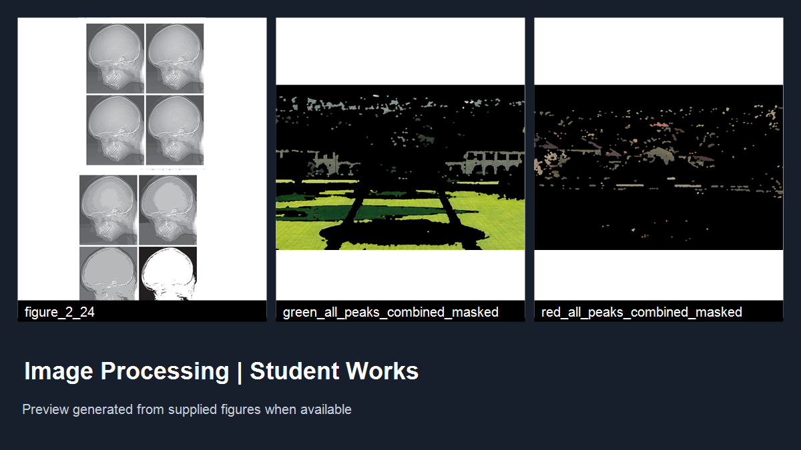
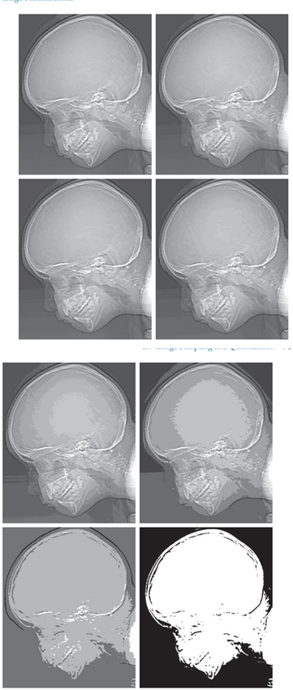
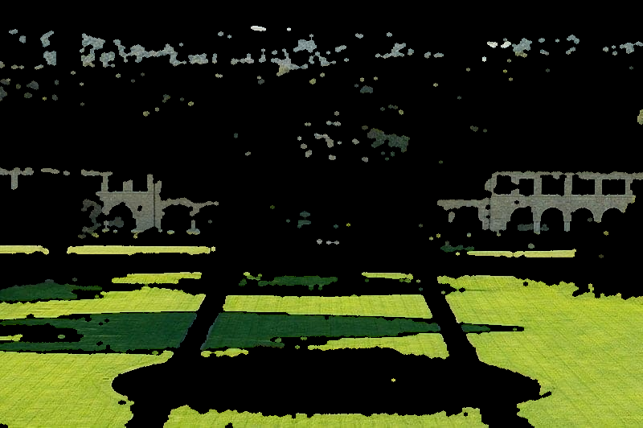
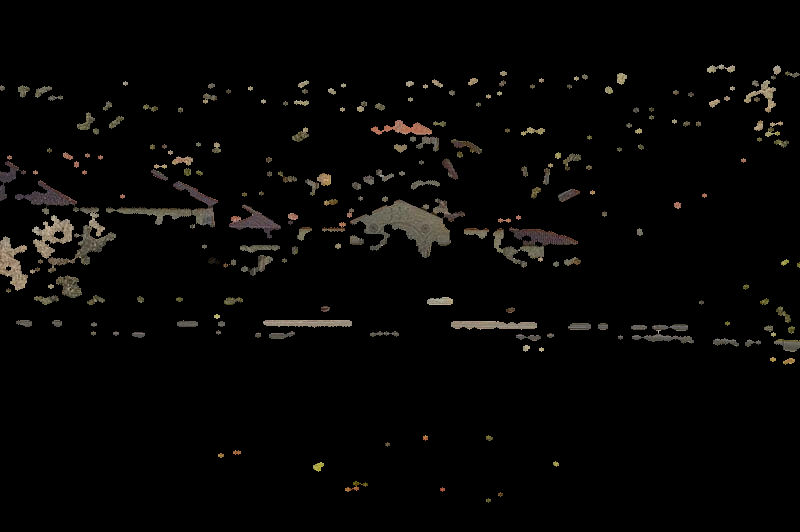
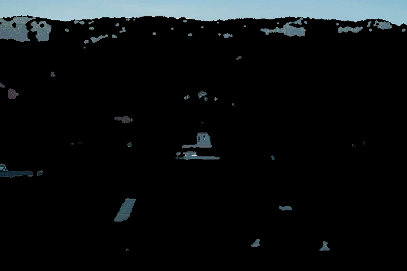

RGB Color Segmentation Using Dominant Channels and Histogram Peaks#
Overview#
A student image-processing project documenting RGB color segmentation with channel-dominance masks, Gaussian-smoothed histograms, adaptive peak intervals, and morphological post-processing. The report also compares the RGB approach conceptually with HSV segmentation. The uploaded archive contains LaTeX documentation; any locally supplied figures will be displayed as submitted, not represented as independently reproduced results.
Project figures#





Figures are taken from the files submitted for this project.
Project description#
Project overview#
This submission documents a color-image segmentation workflow based on the RGB channel intensities and adaptive intensity intervals derived from smoothed histograms. For each pixel, the method first determines which of the red, green, and blue channels is dominant. Within each channel, it identifies histogram peaks, constructs local intervals around them, and combines intensity thresholding with the dominant-channel mask. The masks are subsequently refined with morphological opening and closing.
The supplied Persian LaTeX text also discusses HSV-based segmentation as a related approach and illustrates how hue-based thresholds differ from direct RGB channel thresholds. The discussion is conceptual; the supplied archive is not a benchmark evaluation.
Documented processing pipeline#
Read and separate channels. Load an input image with OpenCV (
cv2.imread), convert the BGR representation to RGB, and separate the three channels.Measure channel dominance. Use
numpy.argmax(..., axis=2)to assign each pixel to the channel having its largest recorded intensity.Analyze histograms. Compute a 256-bin intensity histogram for each channel and smooth it with a one-dimensional Gaussian filter.
Select adaptive intensity intervals. Locate histogram peaks using SciPy’s
find_peaks; for multiple peaks, use neighboring valleys as interval limits. A specified 60% width rule handles the single-peak case.Produce and clean masks. Combine the interval mask with the dominant-channel mask. Apply opening and closing with an elliptical structuring element to remove small artifacts and fill small gaps.
Save channel and peak outputs. The documentation describes per-peak masks, per-channel combined masks, and RGB masked images.
Parameters documented in the source#
Parameter |
Documented value |
Role |
|---|---|---|
|
|
Smoothing each intensity histogram |
|
|
Relative peak prominence threshold |
|
|
Minimum distance between peaks in intensity bins |
|
|
Interval-width parameter |
|
|
Elliptical morphological kernel size |
RGB versus HSV#
RGB channel-dominance segmentation uses relative red, green, and blue intensities directly. The report also introduces segmentation in HSV, where the hue and saturation coordinates allow different color-thresholding strategies. Neither representation alone guarantees object-level semantic segmentation, and both can be sensitive to changes in illumination or image characteristics.
Submitted material and reproducibility#
The uploaded RAR contains two LaTeX source files, main.tex and rgb_image_segmentation.tex, not a standalone Python implementation. The LaTeX sources refer to multiple result figures, including a sample input image and RGB/HSV segmentation outputs, which were not included in the uploaded archive. Any actual figures included in the local project folder are selected and compressed by the batch preparation program for the web gallery; these are submitted outputs, not re-generated or independently validated experimental results.
The student name appears in the manuscript source, but the public site metadata leaves the name field blank pending explicit name-publication consent. Source files are included for educational review, subject to the instructor’s authorization for publication.
Source and verification notes#
LaTeX figure references: 20; not found by filename in local source tree: 0
Offline Windows GDI+ image generation used; no Pillow or internet required
Gallery: 4 actual submitted figures compressed for the website
The page describes the supplied materials; correctness and runtime performance have not been independently verified.
Downloads#
Source files — Part 1 of 2 (ZIP) (44.0 MB) — Download all parts and run RESTORE_LARGE_FILES.py if any original file was split.
Source files — Part 2 of 2 (ZIP) (35.4 MB) — Download all parts and run RESTORE_LARGE_FILES.py if any original file was split.
main (4.0 MB) — PDF supplied with the project